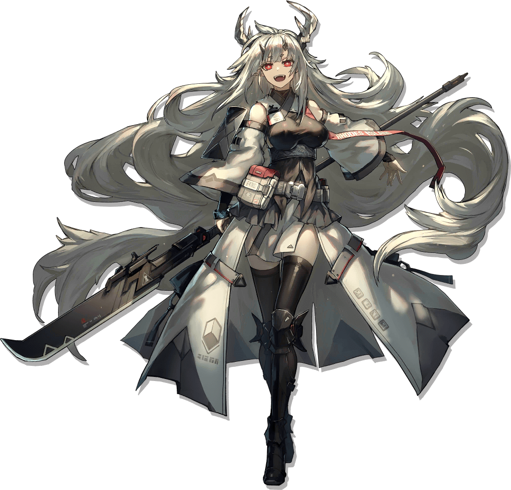
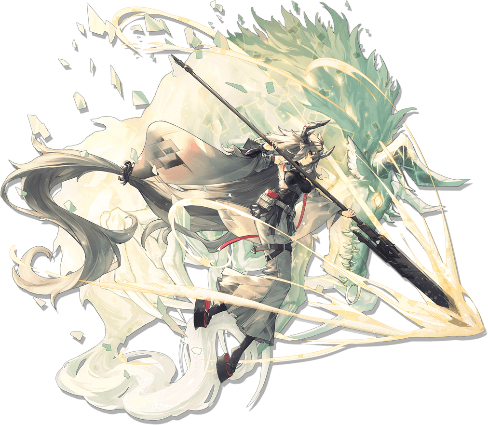

マトイマルにあいされています！
公開求人(無料ガチャ)で，タグ無指定なのに2日連続で来てくれた．
そうそう起こることではないため，マトイマルは私のことが好きなのだと思う．
マトイマルのいいところ
- かっこいい
- かわいい
- 高身長
- お腹がすいたらおにぎりを作ってくれる
- 自己治癒力がある
- お花が好き
- 華道ができる
- サッカーもできる
- かわいい
- 純粋
- 実直
- 阿呆
- 中級メランサ
マトイマルがかわいすぎる
セリフの抜粋
- ドクター、腹減ってんじゃないか？我輩が作った握り飯を食ってみろ、うまいぜ！
- 我輩は意外と多趣味なんだ！武道だけじゃなく、サッカーに華道だってやるんだぜ！ただの戦狂いの猪武者だと思ってもらっちゃ困る！
- 我輩はな、いっつも周りのものをぶっ壊しちまうから、華道の先生に生け花を習って、力をコントロールする術を学んでるんだ。それに、綺麗な花たちに囲まれてると、めちゃくちゃ気持ちいいんだぜ！
- おいドクター、ロドスでもサッカー大会をやるんだってな！我輩と一緒に参加しようぜ！心配しなくても、我輩がいれば相手は降参するに違いない！ドクターは優勝したときの決めポーズでも考えといてくれればいいぜ！
- 撤退だ！我輩が援護するから、怪我しないように気をつけな！
マトイマルのことをひどくいわないでね
マトイマルはオニという種族である．
しかし，他の種族を食ってきたという根も葉もない噂に苦しんでいる．
マトイマルは純粋でかわいい子なので，そんなこと言わないでください．
さもないとぶった切られます．
マトイマルかわいいと思っているよね？
{{ message }}
Now you see me